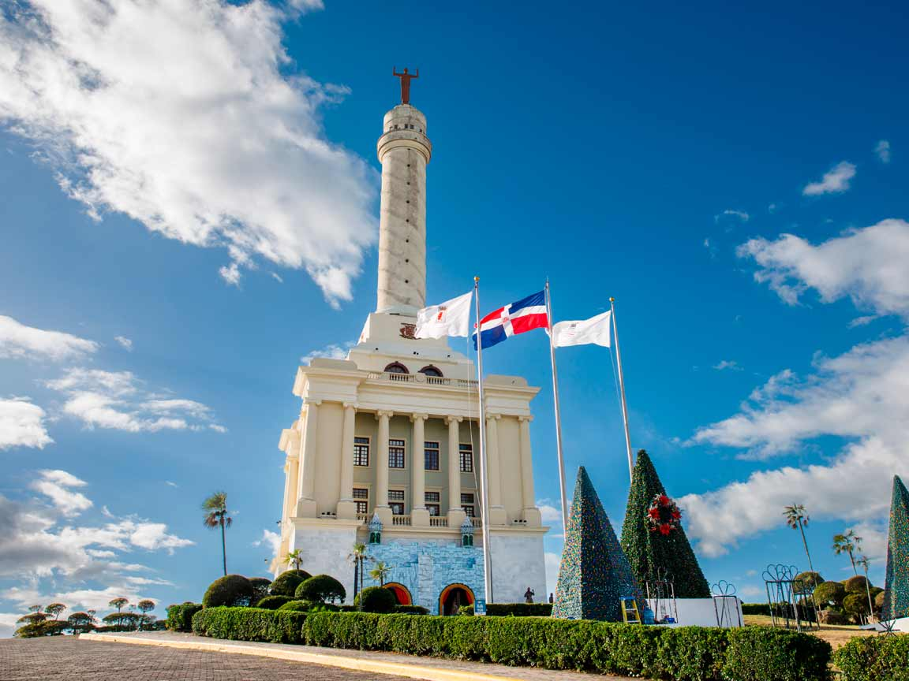

Monumento a los Héroes de la Restauración, Santiago
este monumento honra a los héroes de la Guerra de la Restauración. Es un símbolo de la independencia y el orgullo nacional.

Alcázar de Colón, Santo Domingo
El Alcázar de Colón es una histórica residencia que perteneció a Diego Colón, hijo de Cristóbal Colón. Se encuentra en la Zona Colonial de Santo Domingo y es un importante ejemplo de la arquitectura del siglo XVI.

Faro a Colón, Santo Domingo
Este monumento en forma de cruz, ubicado en Santo Domingo Este, conmemora el 500 aniversario del descubrimiento de América. Es un importante centro cultural y turístico.